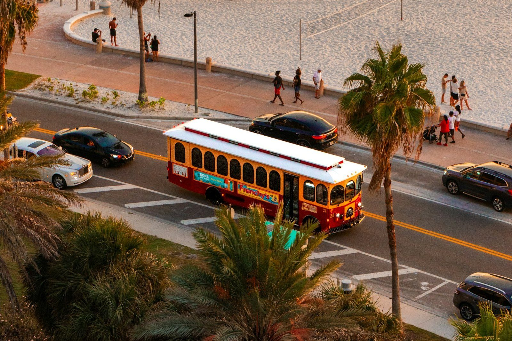

About Leonida Tours: Hospitality People, Local Operators
We came out of hotels, restaurants and clubs, then partnered with the local operators who know this city best. Here is who runs your tour, how we work with them, and how pickup works.
Leonida Tours is a Miami hospitality company that runs small-group city tours, boat trips on Biscayne Bay, and Everglades and Florida Keys day trips. We are not a bus company that got a website. We are hospitality professionals - front desk, concierge, restaurant and club people - who spent years watching visitors arrive in this city and leave having seen a postcard instead of a city.

Why we exist
Miami is one of the most visited cities on earth and one of the least explained. Visitors arrive, see the beach, take a selfie, and leave without knowing that the murals are two miles north, that the best sunset is from the water rather than the sand, or that the wetland half an hour west is the largest of its kind on the continent.
And fans of the worlds we grew up with kept asking the same question: is the city in the trailers real, and can I go there? Yes to both, but nobody was making it easy. Not the scene-by-scene breakdowns, not the honest answer about which shot is a composite, and definitely not a way to spend one morning in the actual places.
We run small groups and real routes rather than a list of stops. That is slower, it earns less, and it is the only version of this job we were interested in doing.
Who we are
- Hospitality professionals first. We came out of hotels, restaurants, clubs and concierge desks in Miami. We know what a good host does, because we did it for a living, every single day, for years.
- Operators, not brokers. We vet every partner we work with, we are on the tour with you, and a problem on your day is our problem rather than somebody else's.
- Small on purpose. The people who answer your messages are the people who run your tour. Nothing is outsourced to a call centre.
How the partnership works
The best tours in this city already exist. They are run by families who have been taking airboats into the sawgrass for three generations, by captains who grew up on Biscayne Bay, and by drivers who know every shortcut, every lunch stop and every pull-off between here and Key Largo. Rather than pretending we could out-drive them, we partnered with them.
- Local operators we trust. The Everglades airboat families, the Biscayne Bay captains, the Keys drivers and the city-route specialists run the routes they have run for years, on their own licences, in their own vehicles.
- We handle everything around the tour. One booking, one invoice, one point of contact, a consistent host on the day, and a single standard for what a Leonida Tours experience means.
- One standard, checked. Every partner is visited, insured, documented and rated by us. If a route stops hitting the standard we stop selling it, and we will tell you why rather than quietly swap it out.
- A Leonida host is always there. Even when a partner drives, a Leonida host travels with the tour, and what that host does does not change from one route to the next.
That is the whole model: the local operators who know the route best, and a hospitality team that makes the day feel effortless from the first message to the last one.
Running every day of the year, from November 2026
Tours start on 19 November 2026 and run every day after that. There is no off-season here. The city tours run daily with a daytime, an afternoon and a sunset-and-night departure, the boat sails on its own timetable, and the Everglades and Florida Keys trips run on set days each week with private departures on request.
- Miami city tour: daily, with day and sunset departures, all year round.
- Biscayne Bay boat tour: daily at 11am, 4pm and sunset.
- Everglades airboat and Keys day trip: set days each week, private departures any day on request.
- Private tours: any day, any time, with the route built around what you want to see.
What a Leonida Tours tour actually is
- A small group. Twelve passengers maximum on the city tour, so you can hear the guide and you can ask questions.
- Licensed operators. Every route is run by a licensed Florida tour operator, and every vehicle and boat on it is insured and documented.
- A local host. Every tour is led by someone who lives here. Our hosts are not script-readers, and the one who has driven the Everglades route longest has done it for over a decade.
- An honest answer when we do not know. If you ask us which bar is best on a Tuesday, we will tell you which one is best on a Tuesday rather than the one that pays us more.
Pickup, wherever you are staying
We pick up across the greater Miami area: South Beach, Brickell, Downtown Miami, Coral Gables, Coconut Grove, Key Biscayne, Hialeah, Doral, Aventura and the hotels along the strip. Your exact pickup point is not published on this site. It is sent with your booking, once we know where you are staying, how many of you there are and whether you have luggage with you.
- City tours: pickup included anywhere in the greater Miami area, at your hotel lobby, your building's kerb or the nearest landmark.
- Everglades and Keys: pickup included across the same area, on a short stop list so an early start still works.
- Private tours: your door, your driveway or your lobby. You choose when you book.
- Airport: available for groups. Send us your flight number and we will time the pickup to it.
Staying somewhere we have not heard of? Ask. We will tell you honestly whether we can collect you.
What is included
| City tour | Boat trips | Everglades & Keys | |
|---|---|---|---|
| Duration | 3 hours | 2 - 4 hours | 4 - 8 hours |
| Transport | Air-conditioned minibus | Vessel | Shuttle from Miami |
| Pickup | Included across greater Miami | Included across greater Miami | Included across greater Miami |
| Guide | Yes, on board | Yes, on board | Yes, with a wildlife or marine guide |
| Refreshments | Water and a local snack | Water and one drink | Water, and lunch on the Keys trip |
| Tickets | None needed | None needed | Park fees included on the Everglades tour |
What is never included: tips, which are entirely at your discretion; and any alcohol, because most of these tours involve being on the water and we would rather you enjoyed it.
How we handle the weather
South Florida gets serious storms, and the rule is simple: if it is not safe, we do not go out. Boats do not leave the marina in a thunderstorm, and we cancel rather than run a reduced or delayed route.
- On the day: if we cancel, you get a full refund or a free move to another date, your choice.
- In advance: if there is a named storm watch, we will contact you the evening before so you can rearrange without losing your slot.
- The Everglades and the Keys: these run in more weather than the boat tours, because a car can wait out a shower, but they are also the two most likely to be delayed on the highway, so leave your afternoon free.
How we make money
We sell the tour you are on. We do not sell you a shopping stop, a timeshare pitch, a jewellery stop or a club entry. The guides are not commissioned on anything you buy afterwards, because they do not take you anywhere you would want to buy anything afterwards.
We also make a small amount from hotel and ticket affiliate links on this site, which are marked where they appear and which never change what we recommend. If a tour is worth recommending, we will recommend it whether or not anyone paid us.
Who owns the words on this site
We write everything ourselves and we do not use generated text for our guides, our location descriptions or our itineraries. Where we describe a game, a film or a television show, we use the names only to identify real places, and our editorial policy explains exactly how that works.
We are not affiliated with any game publisher
Leonida Tours is an independent South Florida tour company. We are not affiliated with, endorsed by, licensed by or sponsored by any game publisher, and we use no game art, logos, characters, screenshots or audio.
Get in touch
We do not publish a street address, a phone number or a mailbox, and we would rather you did not have to hunt for one. Everything starts on our contact page: one form, tell us your dates, your group size and where you are staying, and a person answers by email.
- Contact page: the one place to send an enquiry, a group booking or a correction.
- One form: it reaches the team, and we answer by email, usually the same day.
- No address to visit: pickup points are shared after you book, not published.
- Tours run every day of the year, from 19 November 2026.
Frequently asked questions
Who actually runs a Leonida Tours tour?
Local operators we have vetted and partnered with run the routes they know best, and a Leonida host is on the tour with you. We handle the booking, the pickup, the host and the standard of service.
Do you run your own vehicles and boats?
We work with licensed local operators who do, many of them doing it for decades. Every vehicle, vessel and operator we sell is visited, insured, documented and rated by us before you ever ride on it.
When do tours start, and do they run all year?
19 November 2026, and every day of the year after that. City tours run daily with day and sunset departures, the boat sails daily at 11am, 4pm and sunset, and the Everglades and Keys trips run on set days each week.
How many people are on a Leonida Tours tour?
Twelve passengers maximum on the Miami city tour, and fewer on the smaller boat departures. It is a small group so the host is audible and everyone can ask questions.
Are Leonida Tours hosts local?
Yes. Every tour is led by a South Florida resident who drives these routes regularly. Our most experienced host has been running the Everglades route for over a decade.
Do you pick me up from my hotel?
Yes, across the greater Miami area: South Beach, Brickell, Downtown, Coral Gables, Coconut Grove, Key Biscayne, Hialeah, Doral and Aventura. The exact pickup point is sent with your booking, not published on the site.
What happens if the weather is bad?
Boat tours do not leave the marina in a thunderstorm and we cancel rather than run a shortened route. If we cancel, you get a full refund or a free move to another date, whichever you prefer.
Are you affiliated with any game publisher?
No. Leonida Tours is an independent South Florida tour company with no affiliation with, endorsement from or sponsorship by any game publisher. We use game names only to identify real-world locations.
Related pages
Editorial Policy: How We Research and Write Our Guides
How we identify real locations, what we will and will not publish, how we label confidence, and how you reach us to correct something we got wrong.
Contact Leonida Tours: Send Us a Message
One form reaches the whole team. Booking, changes, group and private tours, corrections or press: write it here and we answer by email, usually the same day.
Pickup and Meeting Points: How Every Tour Starts
We do not publish a street address. Your exact pickup point is sent with your booking, and we collect guests across the whole greater Miami area.